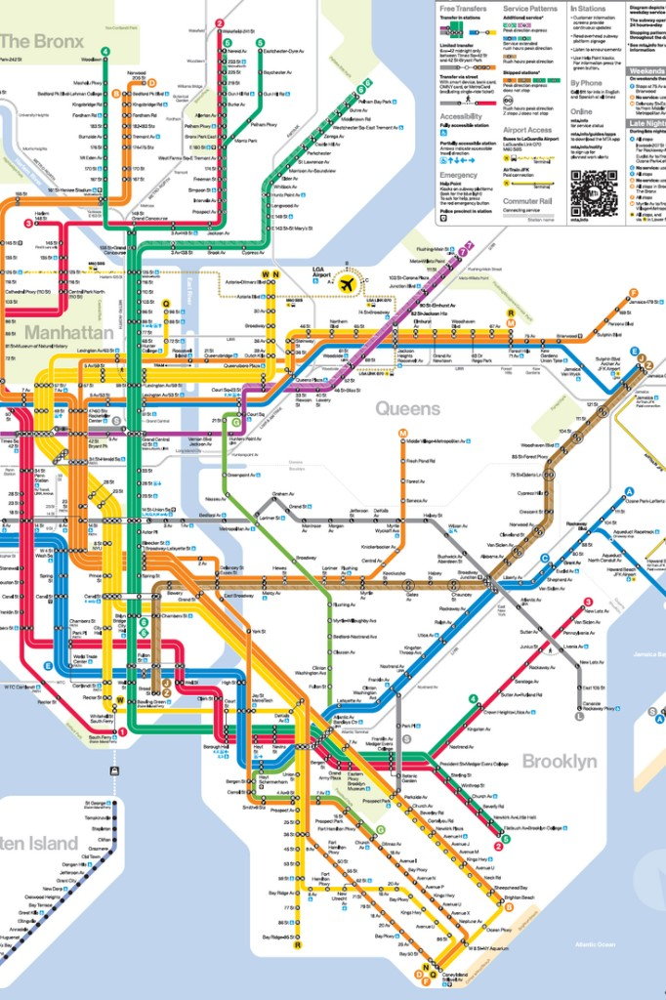
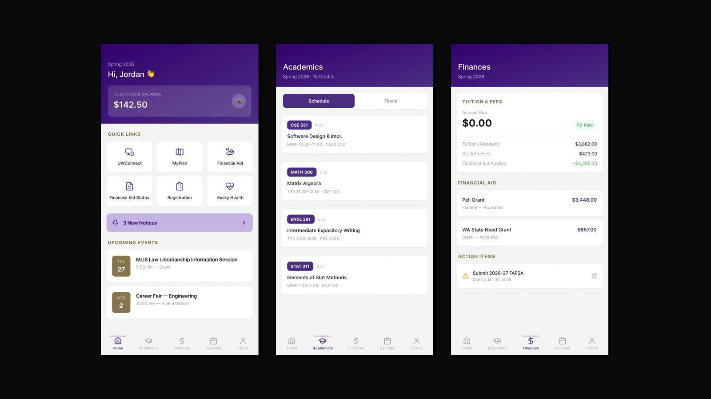
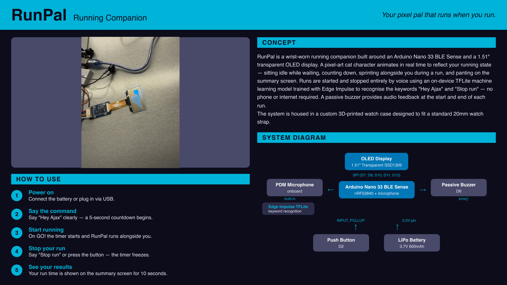

Works

// Qualitative Study
Musicians
How independent musicians identify, pursue, and manage live show bookings — a qualitative investigation into self-promotion and venue relationships.
View Project →
// AR Prototyping
RunAR
Real-time AR performance insights delivered through a heads-up display, keeping runners informed without breaking their focus on the road ahead.
View Project →
// Qualitative Research
Riding Unseen
A fly-on-the-wall study examining how King County Metro transit infrastructure fails marginalized and low-income communities.
View Project →
// UX / Product Design
SlumberPal
A calming sleep companion for children — a paired physical product and mobile app designed to ease bedtime anxiety through routine and interaction.
View Project →
// App Redesign
MyUW Redesign
Redesigning the University of Washington student portal app to reduce cognitive load, surface critical information faster, and eliminate navigational friction.
View Project →
// User Research
Wordstream
Evaluating wordstream visualization tools as a method for making qualitative text-based research faster to analyze and easier to communicate.
View Project →
// Physical Prototype
RunPal
A wrist-worn running companion featuring a pixel-art pet, a voice-controlled interval timer, and live pace feedback built on Arduino hardware.
View Project →